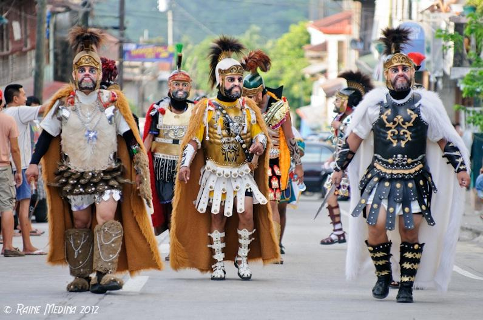
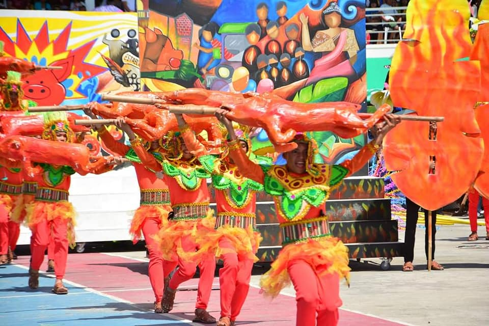
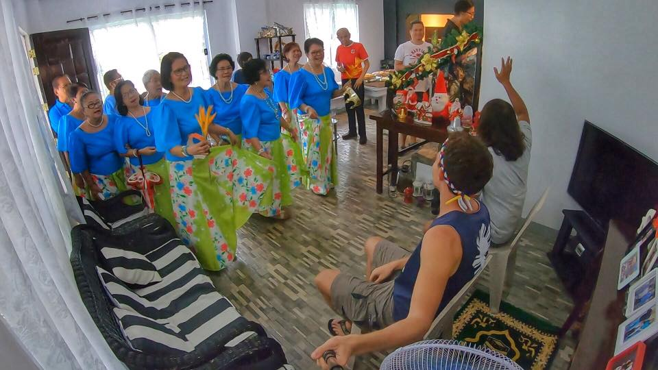

Moriones Festival
The Moriones is a lenten festival held annually on Holy Week on the island of Marinduque, Philippines. The "Moriones" are men and women in costumes and masks replicating the garb of biblical Imperial Roman soldiers as interpreted by locals. The Moriones tradition has inspired the creation of other festivals in the Philippines where cultural practices is turned into street festivals
 Lechon festival is one of the festival that celebrated by the municipality of torrijos,its is for the thanksgiving that they recieve when it comes in the producto of livestock.
 The tubong or putong, is a ceremony indigenous to the island of Marinduque, Philippines. Literally, the word “putong” means to crown, is a song of thanksgiving, hope and prayer for a long, blessed life. According to beliefs, the patron saint rejoices at this kind of celebrations and intercedes for the honoree in his wish for long life, happiness and safety from accidents and bad luck. Commonly performed to welcome guests and to wish them good life, health and luck. It is also done during birthdays, anniversaries, graduations or any special events that a person is thankful of and praying for a blessed path in life.